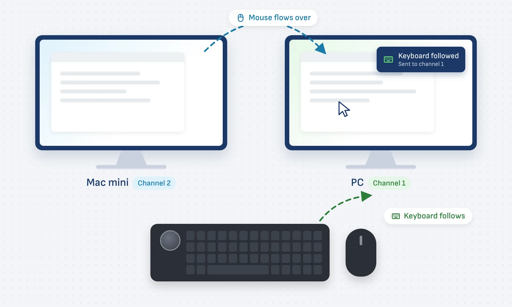
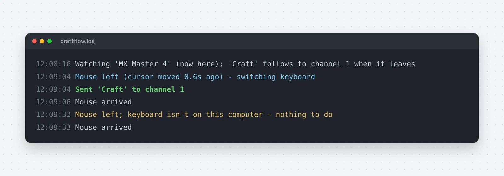

My keyboard got left behind
I work on a Mac mini and a PC side by side. With Logitech Flow, my MX Master mouse crosses to the other computer when I push the cursor off the screen edge, and a supported keyboard is meant to come along. Logitech's software never added Flow for the Craft, so every crossing meant reaching for its switch key or typing into the wrong computer.
Send the keyboard the same command its switch keys use
A small script runs in the background on both computers and does what Flow would do for a supported keyboard.
- Watch the mouse. It checks the mouse through its USB receiver a few times a second; when the mouse stops answering, Flow has moved it.
- Tell a hand-off from a nap. It only acts if the cursor moved in the last few seconds, so a sleeping mouse can't pull the keyboard away.
- Press the switch key for me. It sends the Craft Logitech's own change-channel command: channel 1 for the PC, 2 for the Mac.
- The losing side sends it. The computer the mouse just left still holds the keyboard, so it works in both directions.
One desk again, without buying a new keyboard
I set out to buy a supported keyboard and ended up with a working Flow setup the same day, built and debugged with Claude.
- The Craft could already do it. Only the software support was missing, so the keyboard I like stays.
- macOS was the real puzzle. Input Monitoring permission and shared device access took more fixing than the switching itself.
- Starts on its own. A login item on the Mac and a scheduled task on Windows keep it running.

Available for work